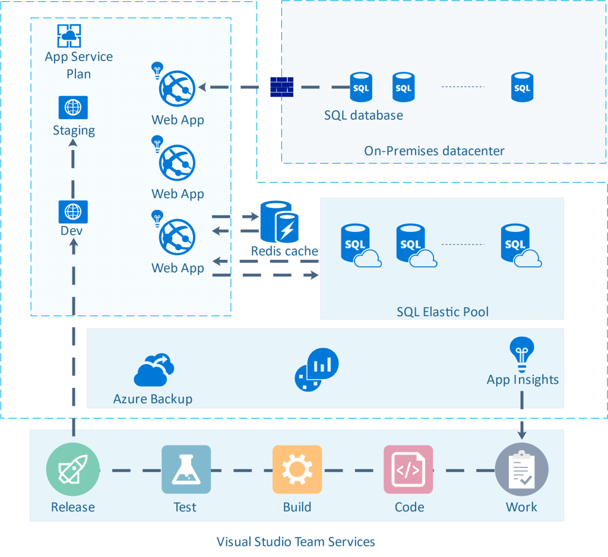
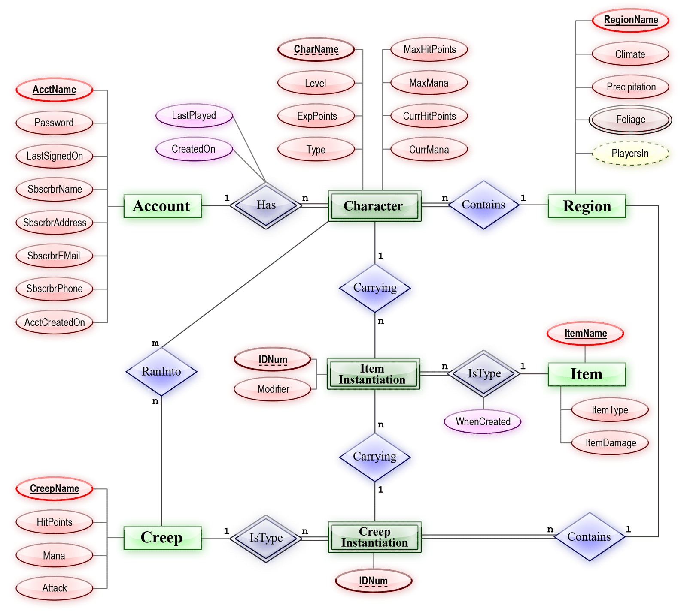
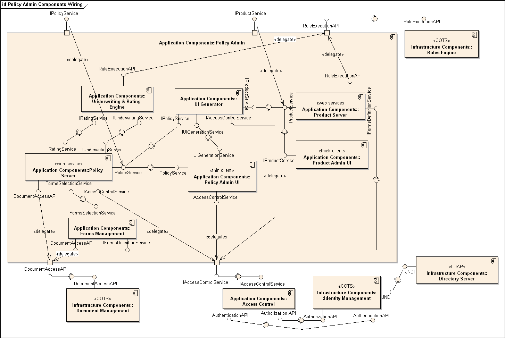
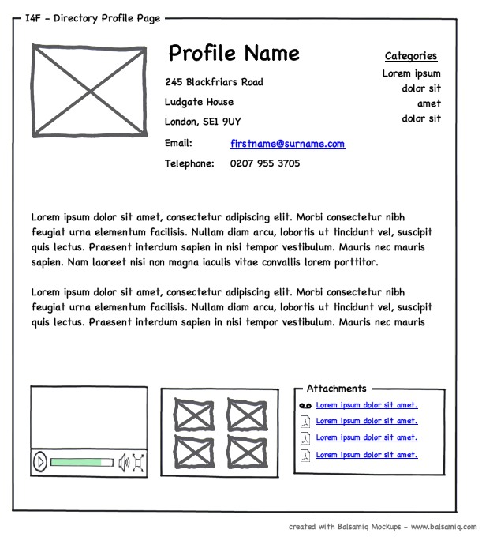
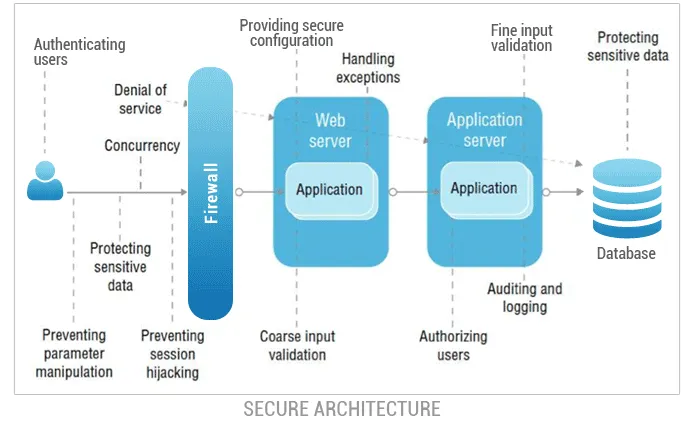
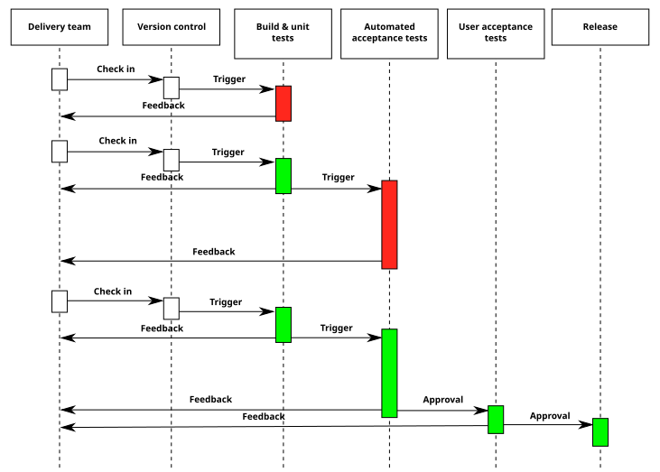

LỢI ÍCH CỦA SDD
Tại sao mọi dự án phần mềm nghiêm túc đều cần Software Design Document?
Tài liệu Thiết kế Phần mềm
SDD là tài liệu mô tả toàn diện về kiến trúc, thiết kế và chức năng của một hệ thống phần mềm. [IEEE 1016]
SDLC — Vòng đời phát triển phần mềm — là quy trình từ ý tưởng đến sản phẩm hoàn chỉnh:
Thu thập và phân tích yêu cầu
Thiết kế kiến trúc, module, CSDL, giao diện
Viết code, kiểm thử, triển khai
Trong Agile, SDD được cập nhật liên tục qua mỗi Sprint. Nhiều đội dùng Confluence, Notion hoặc wiki thay cho Word. [Atlassian]
| Thời kỳ | Trọng tâm | Kỹ thuật thiết kế | Tài liệu |
|---|---|---|---|
| 1940s–1960s | Hướng phần cứng | Lập trình tùy ý | Không có hoặc flowchart cơ bản |
| 1970s–1980s | Lập trình cấu trúc | Module, Waterfall | Flowchart, Data Flow Diagram |
| 1990s | Hướng đối tượng | UML, Design Patterns | Class Diagram, Sequence Diagram |
| 2000s | Agile & Iterative | Lightweight, continuous integration | Wiki, Confluence, "just enough" docs [Agile Manifesto, 2001] |
| 2010s–nay | Cloud, Microservices & DevOps | API-first, CI/CD, IaC | OpenAPI, ADRs, living docs [Fowler] |
SDD không còn là file Word dài hàng trăm trang. Các đội hiện đại dùng "living documentation" — tài liệu tự sinh từ code (OpenAPI từ annotations, ERD từ schema). [Atlassian] [Fowler]
Tại sao mọi dự án phần mềm nghiêm túc đều cần Software Design Document?
Xác định kiến trúc tổng thể và các thành phần chính — như bản vẽ kiến trúc trước khi xây nhà
Mô tả mối quan hệ giữa các thành phần, chức năng và cách tương tác
Chi tiết từng thành phần: chức năng, input/output, dependencies
Kiến trúc hiện đại dùng C4 Model (Context → Container → Component → Code) để mô tả hệ thống ở nhiều mức chi tiết. [c4model.com]
Amazon (2002): CEO Jeff Bezos gửi email nội bộ nổi tiếng yêu cầu mọi đội phải giao tiếp qua API có tài liệu thiết kế rõ ràng. Mỗi service phải có SDD mô tả input/output/dependencies — nền tảng giúp Amazon phát triển thành AWS, nền tảng cloud lớn nhất thế giới. [The Bezos API Mandate]
Spotify: Mỗi "Squad" (đội 6-12 người) sở hữu 1 microservice với SDD riêng mô tả API contracts, data ownership, dependencies. Cho phép hơn 200 đội phát triển độc lập mà hệ thống vẫn hoạt động thống nhất. [Spotify Engineering]
Ví dụ thực tế — Google: Google duy trì hệ thống tài liệu thiết kế nội bộ gọi là "Design Docs". Mọi dự án lớn bắt buộc viết design doc trước khi code. Theo Titus Winters (Software Engineering at Google), design docs giúp kỹ sư mới onboard vào codebase hàng tỷ dòng code trong vài tuần thay vì vài tháng. [Software Engineering at Google, Ch.10]
Nhiều đội dùng Architecture Decision Records (ADR) để ghi lại lý do đằng sau mỗi quyết định thiết kế — giúp người sau hiểu "tại sao" chứ không chỉ "cái gì". [adr.github.io]
| Giai đoạn phát hiện | Chi phí tương đối |
|---|---|
| Thiết kế (Design) | 1x |
| Lập trình (Coding) | 6.5x |
| Kiểm thử (Testing) | 15x |
| Vận hành (Production) | 100x |
Healthcare.gov (Mỹ, 2013): Website bảo hiểm y tế — chỉ 6 người đăng ký thành công ngày đầu tiên (mục tiêu: 250.000). Nguyên nhân: 55 nhà thầu xây module không tương thích, không có SDD kiến trúc tổng thể. Chi phí sửa chữa: hơn $2 tỷ USD. [Wikipedia]
Ariane 5 (ESA, 1996): Tên lửa trị giá $370 triệu nổ sau 37 giây phóng. Nguyên nhân: module phần mềm tái sử dụng từ Ariane 4 không được thiết kế lại cho thông số mới (64-bit → 16-bit overflow). Lỗi có thể phát hiện ở design review. [Wikipedia]
Ví dụ — Netflix: Ban đầu Netflix là 1 ứng dụng monolithic. Khi người dùng tăng lên hàng trăm triệu, họ dùng SDD để chuyển đổi sang microservices (hơn 1.000 services). Nhờ tài liệu thiết kế rõ ràng, mỗi đội có thể deploy hàng nghìn lần/ngày mà không ảnh hưởng đội khác. [Netflix Tech Blog]
Ví dụ — Grab: Kiến trúc SDD giúp Grab mở rộng từ taxi sang food, payment, logistics — mỗi "vertical" là module riêng, phát triển độc lập nhờ API contracts rõ ràng trong SDD. [Grab Engineering]
Ví dụ — Healthcare.gov: Thất bại $2 tỷ USD do 55 nhà thầu xây module không tương thích — thiếu SDD kiến trúc tổng thể. [Wikipedia]
Ví dụ — Twitter/X (2023): Khi sa thải 80% nhân sự, nhiều hệ thống gặp lỗi do đội mới không hiểu code cũ. Các service có tài liệu thiết kế tốt được khôi phục nhanh hơn nhiều lần so với service chỉ có code không tài liệu. [Wikipedia — Twitter layoffs]
Thống kê NIST: Lỗi phần mềm gây thiệt hại $59.5 tỷ USD/năm cho kinh tế Mỹ, phần lớn phòng tránh được bằng thiết kế tốt hơn. [NIST]
Ví dụ — Google: Kỹ sư mới tại Google onboard vào codebase hàng tỷ dòng code nhờ hệ thống "Design Docs" nội bộ — mọi dự án bắt buộc có tài liệu thiết kế trước khi code. [Software Engineering at Google]
Ví dụ — Atlassian: Atlassian công bố quy trình nội bộ: mọi feature mới bắt buộc có Design Document trên Confluence trước khi code. Giúp hơn 10.000 kỹ sư toàn cầu onboard nhanh và chuyển giao dự án hiệu quả. [Atlassian SDD Guide]
Ví dụ — Ngân hàng VPBank: Khi phát triển hệ thống core banking, SDD là tài liệu bắt buộc để Ngân hàng Nhà nước phê duyệt trước khi triển khai. Không có SDD đạt chuẩn = không được phép vận hành. [Ngân hàng Nhà nước VN]
Ví dụ — Viettel: Các dự án phần mềm quốc phòng và viễn thông của Viettel yêu cầu SDD tuân thủ chuẩn ISO/IEC 12207 (quy trình vòng đời phần mềm) trước mỗi giai đoạn phát triển. [Viettel]
Mỗi loại tập trung vào một khía cạnh khác nhau của thiết kế phần mềm
| # | Khía cạnh | Tập trung vào |
|---|---|---|
| 1 | High-Level Design (HLD) | Kiến trúc tổng thể, thành phần chính — "what" không phải "how" |
| 2 | Low-Level Design (LLD) | Chi tiết triển khai từng module, class, method — cho developers |
| 3 | Architectural Design | Patterns kiến trúc (microservices, layered, event-driven) |
| 4 | Data Design | Mô hình dữ liệu, ERD, database schema, tối ưu lưu trữ |
| 5 | Component Design | Thiết kế từng module/component riêng lẻ |
| 6 | UI/UX Design | Wireframe, mockup, user flow, design guidelines |
| 7 | API Design | Endpoints, request/response, authentication, error handling |
| 8 | Security Design | Xác thực, mã hóa, phân quyền, compliance |
| 9 | Deployment & Maintenance | Triển khai, CI/CD, monitoring, backup, bảo trì |
Mô tả tổng quan kiến trúc và thành phần chính. Tập trung vào "cái gì" chứ không phải chi tiết triển khai.
Ví dụ (Online Banking): 4 module: Authentication, Account Management, Transaction Processing, Notification. Frontend ↔ Backend qua RESTful API, Backend ↔ MySQL + Redis Cache.

Sơ đồ mạng (Network Diagram) — thành phần cốt lõi trong HLD, thể hiện tất cả các thành phần mạng và giao tiếp giữa chúng
Nguồn: Software Dominos
Mục đích, phạm vi, các chức năng chính của hệ thống
Sơ đồ tổng thể: phần cứng, CSDL, ứng dụng, bảo mật, công nghệ
Các subsystem, quan hệ, phụ thuộc, tương tác giữa các module
Flowchart, DFD — dữ liệu di chuyển giữa các thành phần như thế nào
Danh sách framework, ngôn ngữ, CSDL, cloud, tools
User profiles (admin, user, guest) và cách họ tương tác với hệ thống
API endpoints chính, giao tiếp giữa các module, UI tổng quan
Server, cloud, network, CI/CD pipeline
HLD hiện đại thường bao gồm cả Architecture Decision Records (ADR) — ghi lý do chọn từng công nghệ/pattern. [adr.github.io]
Đọc SRS, họp với stakeholders, xác định scope
Chọn pattern (layered, microservices...), vẽ architecture diagram
Liệt kê modules, APIs, databases, 3rd party integrations
Architecture diagram, data flow, deployment diagram
Stakeholders review, feedback, cập nhật, sign-off
Sơ đồ mạng là thành phần cốt lõi trong HLD — thể hiện tất cả thành phần mạng và giao tiếp giữa chúng. [Software Dominos]
| Thành phần | Vai trò |
|---|---|
| App Service Plan | Hosting Web App (Dev → Staging → Production) |
| SQL Database | On-Premises datacenter + SQL Elastic Pool |
| Redis Cache | Cache dữ liệu, giảm tải database |
| Azure Backup | Sao lưu dữ liệu tự động |
| App Insights | Monitoring, logging, performance |
Work → Code → Build → Test → Release — tự động hóa từ lập kế hoạch đến triển khai production
Sơ đồ mạng Azure — App Service, SQL, Redis, CI/CD pipeline
Nguồn: Software Dominos
LLD mô tả chi tiết yêu cầu cấp thấp của các subcomponent và submodule — dành cho developers và testers. [Software Dominos]
| Chức năng | Inputs | Outputs |
|---|---|---|
| User Login | Username, Password | JWT Token (RS256, 24h) |
| Password Reset | Email Address | Reset Link (expire 1h) |
| MFA Verify | OTP, Session ID | Success/Failure |
| Token Refresh | Refresh Token | New Access Token |
Ví dụ LLD chi tiết cho module Authentication — mô tả pseudocode, luồng xử lý, và xử lý ngoại lệ ở mức triển khai. [Software Dominos]
| Tiêu chí | High-Level Design (HLD) | Low-Level Design (LLD) |
|---|---|---|
| Bắt buộc? | Có | Có |
| Giai đoạn SDLC | Analysis | Design |
| Nội dung | Tương đối kỹ thuật | Rất kỹ thuật (highly technical) |
| Đối tượng | PM, sponsors, senior leadership | Business analysts, developers, testers, DevOps |
| Người tạo | Architect / Tech Lead | Principal/Senior Developer, Tech Lead |
| Stakeholders | Business people, senior management | Technical staff |
| Mục đích | Phê duyệt giải pháp (SOW sign-off) | Định hướng design decisions, development, testing |
| Nội dung chi tiết | Kiến trúc hệ thống, use cases, data flow, interfaces | Feature design, impact analysis, pseudocode, algorithms, interface specs |
Mô tả cấu trúc tổng thể của hệ thống phần mềm — cách các thành phần được tổ chức, giao tiếp và triển khai. Đây là tài liệu quan trọng nhất giúp đội ngũ hiểu "bức tranh lớn" trước khi code. [Wikipedia]
| View | Mô tả |
|---|---|
| Logical | Modules, classes, packages — cấu trúc logic |
| Process | Concurrency, threads, communication |
| Development | Tổ chức source code, layers, libraries |
| Physical | Deployment: servers, containers, network |
| +1 Scenarios | Use cases kiểm chứng kiến trúc |
Architecture Decision Records (ADRs) đang được áp dụng rộng rãi — mỗi quyết định kiến trúc được ghi thành 1 file ngắn gọn trong repo, giúp người mới hiểu "tại sao" hệ thống được thiết kế như vậy. [Cognitect]
| Pattern | Đặc điểm | Ví dụ thực tế | Khi nào dùng |
|---|---|---|---|
| Monolithic | 1 codebase, deploy cùng nhau, tất cả module chung process | WordPress, Shopify giai đoạn đầu [Shopify] | Startup, MVP, team nhỏ |
| Layered (N-Tier) | Tách thành các tầng: Presentation → Business → Data. Mỗi tầng chỉ gọi tầng dưới | Hầu hết ứng dụng web truyền thống (Spring MVC, .NET) [Wikipedia] | Web app CRUD, hệ thống enterprise |
| Microservices | Nhiều service nhỏ, deploy độc lập, mỗi service sở hữu database riêng | Netflix (~1000+ services), Uber (DOMA) [Uber] | Hệ thống lớn, nhiều team, cần scale độc lập |
| Event-Driven | Giao tiếp bất đồng bộ qua events (Kafka, RabbitMQ). Loose coupling | LinkedIn real-time feed, hệ thống IoT [LinkedIn] | Real-time, data pipeline, IoT |
| Serverless | Logic chạy trong stateless functions, cloud quản lý infrastructure | AWS Lambda, Azure Functions [AWS] | API nhẹ, event triggers, chi phí thấp ban đầu |
| Clean / Hexagonal | Business logic ở trung tâm, cô lập khỏi DB/UI/API qua ports & adapters | Nhiều dự án DDD, banking systems [Uncle Bob] | Domain phức tạp, cần testability cao |
Angular SPA → gửi HTTP requests → hiển thị dữ liệu cho người dùng
Java Spring Boot: Controller → Service → Repository. Xử lý nghiệp vụ, validation, authorization
MySQL/PostgreSQL via JPA/Hibernate. Quản lý persistence, transactions, caching

Ví dụ triển khai kiến trúc 3 tầng (Presentation → Logic → Data)
Nguồn: Wikipedia
Tập trung vào cách dữ liệu được mô hình hóa, lưu trữ và quản lý.
| Cột | Kiểu | Ràng buộc |
|---|---|---|
| user_id | BIGINT | PK, AUTO_INCREMENT |
| VARCHAR(100) | NOT NULL, UNIQUE | |
| password | VARCHAR(255) | NOT NULL (BCrypt) |
| role | ENUM | STUDENT/INSTRUCTOR/ADMIN |

Sơ đồ thực thể quan hệ (ERD)
Nguồn: Wikimedia Commons
Mô tả thiết kế từng module/component riêng lẻ trong hệ thống — trách nhiệm, giao diện, và cách các component phụ thuộc lẫn nhau. [Wikipedia]
| Chức năng | Inputs | Outputs |
|---|---|---|
| Login | email, password | JWT Token / Error |
| Password Reset | Reset link via email | |
| MFA Verify | OTP, sessionId | Success / Failure |
| Token Refresh | refreshToken | New accessToken |

UML Component Diagram — thể hiện các component và dependencies
Nguồn: Wikimedia Commons
Mô tả các khía cạnh trực quan và tương tác của phần mềm.
Phác thảo layout. Balsamiq.
Chi tiết màu sắc. Figma.
Click được. Figma Proto.

Ví dụ Wireframe trang Profile
Nguồn: Wikimedia Commons
Mô tả thiết kế API cho nội bộ hoặc bên ngoài.
| Method | URL | Mô tả | Auth |
|---|---|---|---|
| POST | /api/auth/register | Đăng ký tài khoản | Không |
| POST | /api/auth/login | Đăng nhập, trả JWT | Không |
| GET | /api/courses | Danh sách khóa học | Optional |
| PUT | /api/courses/{id} | Cập nhật khóa học | Instructor |
| DELETE | /api/users/{id} | Xóa người dùng | Admin |
Mô tả chiến lược đảm bảo an ninh hệ thống.
JWT, OAuth 2.0, MFA
STUDENT / INSTRUCTOR / ADMIN
Injection, XSS, CSRF... [owasp.org]

Kiến trúc bảo mật ứng dụng web
Nguồn: OWASP
Mô tả cách phần mềm được triển khai, vận hành và bảo trì trong môi trường thực tế. [Wikipedia]
| Tần suất | Nhiệm vụ |
|---|---|
| Hàng ngày | Log monitoring, health checks, alert triage |
| Hàng tuần | DB optimization, security patches, backup |
| Hàng tháng | Performance review, capacity planning |
| Hàng quý | Security audit, dependency updates, disaster recovery test |

Continuous Delivery Pipeline — quy trình từ code đến production
Nguồn: Wikimedia Commons
Một dự án thường kết hợp nhiều khía cạnh thiết kế. Bảng dưới giúp chọn khía cạnh phù hợp theo ngữ cảnh:
| Khía cạnh | Dùng khi nào | Ví dụ cụ thể | Đối tượng |
|---|---|---|---|
| HLD | Trình bày tổng quan hệ thống cho stakeholders, giai đoạn đầu dự án | Network diagram, system context cho ban giám đốc | PM, Architects |
| LLD | Hướng dẫn chi tiết implementation cho developers trước khi code | Class diagram, pseudocode, sequence diagram | Developers, Tech Leads |
| Architectural | Hệ thống lớn cần quyết định patterns, scalability, cloud | Microservices cho e-commerce, event-driven cho IoT | Architects, DevOps |
| Data Design | Ứng dụng data-driven, cần thiết kế DB phức tạp | ERD, schema design, indexing strategy | DB Admins, Backend |
| Component | Hệ thống modular, nhiều team phát triển song song | Auth module, Payment module, Notification service | Developers, Team Leads |
| UI/UX | Sản phẩm B2C, trải nghiệm người dùng là ưu tiên | Wireframes, mockups, user flow, design system | Designers, Frontend |
| API | Có API public hoặc nhiều team tích hợp nội bộ | REST/GraphQL spec, Swagger/OpenAPI docs | Backend/Frontend |
| Security | Dữ liệu nhạy cảm, cần compliance (GDPR, PCI-DSS) | Threat model, encryption strategy, access control | Security Engineers |
| Deployment | Cần quy trình triển khai rõ ràng, CI/CD, multi-env | Docker, K8s config, Blue-Green deploy plan | DevOps, SysAdmins |
Định nghĩa cách tổ chức tài liệu thiết kế theo 12 design viewpoints (góc nhìn thiết kế), mỗi viewpoint mô tả hệ thống từ một khía cạnh khác nhau: [IEEE 1016]
| Viewpoint | Mô tả |
|---|---|
| Context | Bối cảnh hệ thống, actors, external systems |
| Composition | Cấu trúc thành phần và quan hệ giữa chúng |
| Logical | Logic nghiệp vụ, class diagrams, business rules |
| Interface | Giao diện giữa các module (APIs, contracts) |
| Interaction | Sequence diagrams, luồng tương tác giữa thành phần |
| Information | Mô hình dữ liệu (ERD, data flow) |
| +6 khác | Algorithm, State, Dependency, Structure, Resource, Physical |
9 khía cạnh thiết kế trong slide này bao phủ hầu hết viewpoints của IEEE 1016, được nhóm lại cho dễ hiểu trong thực hành.
Bắt buộc theo IEEE 1016 và NASA — mỗi quyết định thiết kế phải ghi lại tại sao chọn giải pháp đó, không chỉ mô tả "cái gì": [NASA SwDD]
VD: "Chọn JWT thay vì Session vì cần stateless cho microservices, dễ scale ngang. Trade-off: token không thể revoke ngay — giảm thiểu bằng short expiry (15 phút) + refresh token."
Ghi lại mỗi lần cập nhật: ngày, người, nội dung, phiên bản.
Một tài liệu chứa cả HLD + Data + API Design. Không bắt buộc tách riêng.
Cùng format giữa các dự án trong tổ chức.
Ánh xạ SRS → SDD → Code: mỗi yêu cầu được thiết kế ở đâu, triển khai ở đâu. [NASA]
Ghi lại lý do đằng sau mỗi quyết định thiết kế — không chỉ "cái gì" mà còn "tại sao". [IEEE 1016]
Trong bài tập lớn, SDD sẽ kết hợp nhiều khía cạnh: HLD (kiến trúc), LLD (class/sequence), Data Design (ERD), UI Design (screenshots), Deployment (Docker). Xem phần tham khảo tiếp theo.
Mẫu tài liệu thiết kế kiến trúc SDD — Cấu trúc báo cáo bài tập lớn
* Tài liệu BTL kết hợp cả SRS (Phân tích yêu cầu — IEEE 830) và SDD (Thiết kế — IEEE 1016) trong cùng một báo cáo, phù hợp cho mục đích học tập.
Trình bày bối cảnh, vấn đề cần giải quyết, lý do xây dựng hệ thống. Nêu rõ đối tượng sử dụng và giá trị mang lại.
Tài liệu thiết kế dùng cho ai (dev, QA, PM), phiên bản nào, cập nhật khi nào.
Hệ thống bao gồm những gì, không bao gồm gì (ranh giới rõ ràng).
Viết tắt, thuật ngữ, quy ước đặt tên, format sơ đồ (UML, PlantUML, draw.io).
| Tầng | Công nghệ |
|---|---|
| Frontend | Angular |
| Backend | Java Spring Boot |
| Database | MySQL / PostgreSQL |
| Deployment | Docker, Nginx, CI/CD |
| Security | JWT, BCrypt, HTTPS |
| Actor | Mô tả | Tính năng chính |
|---|---|---|
| Khách | Chưa đăng ký | Xem, tìm kiếm, đăng ký TK |
| Người dùng | Đã đăng nhập | Sử dụng tính năng chính |
| Quản trị | Quản lý HT | CRUD, thống kê, cấu hình |
Phân loại chi tiết hơn Actors — đặc điểm, quyền hạn, hành vi từng nhóm.
Phân nhóm theo module: Xác thực, Quản lý nội dung, Tìm kiếm, Thanh toán, Thống kê, Thông báo...
Hiệu năng, Sẵn sàng, Bảo mật, Mở rộng, Bảo trì, Tương thích, Dễ dùng, Backup, Logging, Pháp lý.
Mỗi quy trình viết dạng bảng: STT | Người thực hiện | Nội dung (8-18 bước).
Mỗi UC gồm: Tên, Actor, Mô tả, Trigger, Tiền/Hậu điều kiện, Luồng chính, Luồng thay thế, Ngoại lệ.
Swim lane (Người dùng | Hệ thống) cho mỗi quy trình chính.
Vẽ UML bằng PlantUML (code-based, version control trên Git) hoặc draw.io (kéo thả, miễn phí).
Dựa trên các UC đã phân tích ở Ch.2, vẽ Activity Diagram, Sequence Diagram, Class Diagram cho từng UC.
ERD + bảng đặc tả (tên cột, kiểu dữ liệu, ràng buộc).
| Method | Endpoint | Mô tả |
|---|---|---|
| POST | /api/auth/login | Đăng nhập |
| GET | /api/users/{id} | Lấy thông tin user |
| PUT | /api/users/{id} | Cập nhật user |
| DELETE | /api/users/{id} | Xóa user |
Wireframes hoặc screenshots: 6-10 trang chính.
Authentication (JWT/OAuth2), Authorization (RBAC), Encryption (HTTPS, BCrypt), Input validation.
Deployment diagram, Docker config, môi trường (Dev/Staging/Prod), CI/CD pipeline.
| ✓ | Chương | Mục cần có | Yêu cầu tối thiểu |
|---|---|---|---|
| Mục lục + Danh sách hình vẽ | Đầy đủ, có số trang | ||
| Ch.1 | Bài toán, phạm vi, quy ước, công nghệ | Mô tả rõ ràng, bảng công nghệ | |
| Ch.2 | Yêu cầu chức năng + phi chức năng | 8+ nhóm CN, 10 loại phi CN | |
| Ch.2 | Lớp người dùng + Quy trình nghiệp vụ | 3-4 lớp, 8-12 quy trình | |
| Ch.2 | Use Case Diagram + Đặc tả UC | 4+ biểu đồ, đặc tả tùy bài toán | |
| Ch.2 | Biểu đồ hoạt động | Tùy bài toán | |
| Ch.3 | Kiến trúc (logic + mã nguồn + triển khai) | 3 sơ đồ + mô tả | |
| Ch.3 | Thiết kế chi tiết (Activity, Sequence, Class) | 15-25 bộ sơ đồ | |
| Ch.3 | Thiết kế UI + CSDL (ERD) | 6-10 screens, ERD + đặc tả bảng | |
| Ch.3 | API + Security + Deployment | Bảng API, sơ đồ bảo mật, Docker config | |
| Ch.4 | Kết luận, hạn chế, hướng phát triển | Tổng kết ngắn gọn | |
| Phân công (Jira screenshots) | Task board, sprint backlog |
Câu hỏi? Thảo luận?
Bài tiếp theo: Architecture Design
40 ThS. Nguyễn Việt Hưng - Trường Đại học CMC